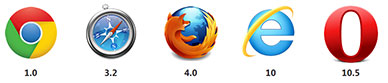
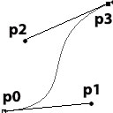

1. CSS3-Muutokset
CSS3-Muutokset ovat mainio tehoste interaktiivisille ja muuten animaatiota vaativille elementeille. Muutoksilla voidaan muuttaa halutun elementin CSS-arvoja jouhevasti määrätyn aikamääreen mukaisesti. Hallittavia CSS-arvoja ovat esimerkiksi: elementin taustaväri background-color, leveys width, korkeus height, läpinäkyvyys opacity, ym...
Muutoskomentojen selainyhteensopivuus on melko laaja, mutta ne vaativat monesti selainkohtaisia etuliitteitä toimiakseen. Alla olevat selaimet tukevat css3 transitioneita.
Alla esimerkki transition-komennolla toteutetusta simppelistä muutosanimaatiosta. Kyseessä on normaali div-elementti, jonka taustaväriä muutetaan kun kursori viedään sen päälle. Muutoksen kestoksi on määritelty kaksi sekuntia.
Seuraavassa esimerkissä hallitaan elementin läpinäkyvyyttä:
Molemmat muutostehosteen suoritetaan kun hiiri viedään elementin päälle. Muutos suoritetaan automaattisesti 'takaperin' takaisin lähtöarvoihin kun kursori poistuu elementin päältä.
Aivan kaikkia ominaisuuksia ei kuitenkaan pysty animoimaan muutosefekteillä. Lista animoitavista ominaisuuksista löytyy täältä:
https://developer.mozilla.org/en-US/docs/Web/CSS/CSS_animated_properties
palaa alkuun
1.1 Tutoriaalivideo osa 1
palaa alkuun
2. Kuinka muutokset toimivat
Aluksi tarvitaan html-elementti jolla on määritettynä id tai class css-tyyli. Elementin tyyleissä määritellään muutosefektin komennot. Muutosefektimoduuli koostuu komennoista joita käytetään määrittämään muutettava ominaisuus, muutoksen kesto, muutosanimaation ajoituksen tyyli ja muutoksen alkamisen viive.
- transition-property
- transition-duration
- transition-timing-function
- transition-delay
Seuraavaksi tarvitaan kohdetyyli jossa määritellään muutettavan elementin uudet arvot. Tämän sivun esimerkeissä kohdetyylit aktivoituvat elementin :hover pseudoluokkavalitsimella.
Moduulissa on myös erikseen transition komento, jolla voidaan yhdistää yllä luetellut komennot. Seuraavaksi Tutustutaan komentoihin tarkemmin.
palaa alkuun
2.1 transition-property
Muutostehostetta luodessa ensimmäinen vaihe on valita elementin muutettava ominaisuus. Valinta tapahtuu transition-property komennolla. Komento hyväksyy kaksi avainsanaa tai pilkuilla erotetun listan ominaisuuksia.
transition-property: all; transition-property: none; transition-property: background-color; transition-property: background-color, height, width;
Avainsanalla all voidaan suorittaa siirtymä kaikkiin muutosta tukeviin ominaisuuksiin. Avainsanalla none siirtymä ei koske mitään ominaisuutta. Muutoksen voi kohdistaa moneen eri ominaisuuteen erottelemalla halutut ominaisuudet pilkuilla.
palaa alkuun
2.2 transition-duration
Komennolla voidaan asettaa muutoksen kesto. Kesto ilmoitetaan sekunteina tai millisekunteina. Kommennon oletusarvo on 0 joka tarkoittaa että muutos on välitön. transition-duration komento on komennoista ainoa, joka on muutoksen kannalta välttämätön.
transition-duration: 2s; transition-duration: 4000ms; transition-duration: 4000ms, 8000ms;
palaa alkuun
2.3 transition-timing-function
Komennolla voidaan hallita muutoksen ajoitusta. Komentoa käytetään joko asettamalla jokin valmiiksitoteutetuista avainsanoista ease, linear, ease-in, ease-out, ease-in-out, tai määrittämällä oma ajoitus neljällä kiintopisteellä.
Kiintopisteet voi määrittää manuaalisesti cubic-bezier()-komennolla. Määritys tapahtuu asettamalla neljä pistettä, joista muodostuu bezier-käyrä.
Valmiiksi määritettyjen ajoitusten bazier arvot:
- ease = cubic-bezier(0.25, 0.1, 0.25, 1)
- linear = cubic-bezier(0, 0, 1, 1)
- ease-in = cubic-bezier(0.42, 0, 1, 1)
- ease-out = cubic-bezier(0, 0, 0.58, 1)
- ease-in-out = cubic-bezier(0.42, 0, 0.58, 1)
transition-timing-function: ease; transition-timing-function: ease, linear; transition-timing-function: cubic-bezier(0.6, 0.1, 0.15, 0.8);
Alla esimerkkejä ajoituksista. Bezier-palkin arvot ovat: cubic-bezier(0.6, 0.1, 0.15, 0.8);
palaa alkuun
2.4 transition-delay
Komennolla voidaan määrätä muutoksen alkamisen viive. Oletusarvo on 0, jolloin muutos alkaa välittömästi sen laukaistua. Viiveeksi voidaan syöttää myös negatiivinen luku. Negatiivinen viive otetaan huomioon siten, että animaatio alkaa siitä kohdasta jossa se olisi ilman viivettä.
transition-delay: 5s; transition-delay: 4000ms, 8000ms; transition-delay: -5s;
palaa alkuun
2.5 transition
Komennolla voidaan yhdistää kaikki muut yllä esitellyt komennot.
Syntaksi:
transition: ominaisuus kesto ajoitus viive;
transition: background-color 3s linear 1s; transition: 4s ease-in-out; transition: 5s;
palaa alkuun
3 Esimerkit
palaa alkuun
3.1 Tutoriaalivideo osa 2
.boxi{
background-color: green;
border: 1px solid black;
width: 200px;
height: 100px;
color: white;
transition-property: width, height, background-color;
transition-duration: 1s, 2s, 5s;
transition-timing-function: linear, ease, ease-out;
transition-delay: 0s, 0s, 2s;
}
.boxi:hover{
background-color: red;
width: 500px;
height: 120px;
}
palaa alkuun
3.2 Esimerkki 1
/* Esimerkki 1 A */
#transition_1a{
width: 70%;
padding: 9px 15px;
background-color: #5ECFC6;
color: white;
-webkit-border-radius: 5px;
-moz-border-radius: 5px;
border-radius: 5px;
/* Transition-komennot eri selaimille */
-webkit-transition: background-color 2s;
-moz-transition: background-color 2s;
-o-transition: background-color 2s;
-ms-transition: background-color 2s;
transition: background-color 2s;
}
#transition_1a:hover {
background-color: #FD737A;
}
/* Esimerkki 1 B */
#transition_1b{
width: 70%;
padding: 9px 15px;
background-color: rgba(94,207,198,1);
color: white;
-webkit-border-radius: 5px;
-moz-border-radius: 5px;
border-radius: 5px;
/* Transition-komennot eri selaimille */
-webkit-transition: background-color 2s;
-moz-transition: background-color 2s;
-o-transition: background-color 2s;
-ms-transition: background-color 2s;
transition: background-color 2s;
}
#transition_1b:hover {
background-color: rgba(94,207,198,0.1);
}
palaa alkuun
3.3 Esimerkki 2
.transition_2a{
width: 100px;
height: 25px;
margin: 5px 0;
padding: 5px;
color: white;
background-color: #5ECFC6;
text-align: right;
-webkit-border-radius: 5px;
-moz-border-radius: 5px;
border-radius: 5px;
}
.transition_2a:hover{
width: 500px;
}
.transition_2a_ease{
-webkit-transition: 3s ease;
-moz-transition: 3s ease;
-o-transition: 3s ease;
-ms-transition: 3s ease;
transition: 3s ease;
}
.transition_2a_linear{
-webkit-transition: 3s linear;
-moz-transition: 3s linear;
-o-transition: 3s linear;
-ms-transition: 3s linear;
transition: 3s linear;
}
.transition_2a_easein{
-webkit-transition: 3s ease-in;
-moz-transition: 3s ease-in;
-o-transition: 3s ease-in;
-ms-transition: 3s ease-in;
transition: 3s ease-in;
}
.transition_2a_easeout{
-webkit-transition: 3s ease-out;
-moz-transition: 3s ease-out;
-o-transition: 3s ease-out;
-ms-transition: 3s ease-out;
transition: 3s ease-out;
}
.transition_2a_easeinout{
-webkit-transition: 3s ease-in-out;
-moz-transition: 3s ease-in-out;
-o-transition: 3s ease-in-out;
-ms-transition: 3s ease-in-out;
transition: 3s ease-in-out;
}
.transition_2a_bezier{
-webkit-transition: 3s cubic-bezier(0.6, 0.1, 0.15, 0.8);
-moz-transition: 3s cubic-bezier(0.6, 0.1, 0.15, 0.8);
-o-transition: 3s cubic-bezier(0.6, 0.1, 0.15, 0.8);
-ms-transition: 3s cubic-bezier(0.6, 0.1, 0.15, 0.8);
transition: 3s cubic-bezier(0.6, 0.1, 0.15, 0.8);
}
palaa alkuun
3.4 Esimerkki 3
.transition_3a{
width: 100px;
margin: 5px 0;
padding: 5px;
color: white;
background-color: #5ECFC6;
text-align: right;
-webkit-border-radius: 5px;
-moz-border-radius: 5px;
border-radius: 5px;
}
.transition_3a:hover{
width: 500px;
}
.transition_3a#del1{
-webkit-transition: 3s ease 1s;
-moz-transition: 3s ease 1s;
-o-transition: 3s ease 1s;
-ms-transition: 3s ease 1s;
transition: 3s ease 1s;
}
.transition_3a#del2{
-webkit-transition: 3s ease 2s;
-moz-transition: 3s ease 2s;
-o-transition: 3s ease 2s;
-ms-transition: 3s ease 2s;
transition: 3s ease 2s;
}
.transition_3a#del3{
-webkit-transition: 3s ease -1s;
-moz-transition: 3s ease -1s;
-o-transition: 3s ease -1s;
-ms-transition: 3s ease -1s;
transition: 3s ease -1s;
}
palaa alkuun